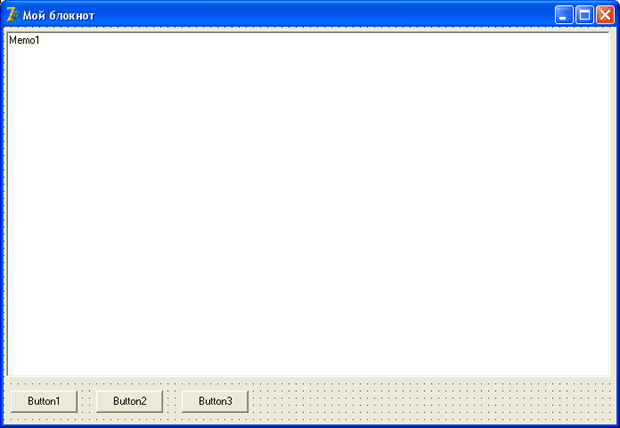

Собственный Блокнот
Каждый пользователь, работающий с Windows, хоть раз да использовал простой текстовый редактор Блокнот.
Сейчас мы создадим немного упрощенную версию Блокнота, которая позволяет вводить текст, сохранять его на диск, и загружать с диска.
Для этого нам требуется создать новый проект.
Если в данный момент у вас уже открыт какой либо проект, выберите команду меню "File – Close All (Файл – Закрыть всё)", затем "File – New – Application (Файл – Новое – Приложение)".
У нас есть новая форма, и пока больше ничего нет.
Сразу изменим некоторые свойства формы.
В свойстве Caption впишите "Мой блокнот" (естественно, без кавычек).
Свойство Name изменим на "fMain".
Совет: чтобы легче ориентироваться в названиях модулей (файлов с кодом) и форм, лучше сразу выработать правила:
1) Перед названием формы будем указывать маленькую букву f, чтобы показать, что это именно форма.
2) Имена форм будем подбирать информативные, чтобы было понятно, с какой формой мы имеем дело.
3) Модули форм будем называть так же, но без буквы f.
4) Главную форму всегда будем называть fMain, а модуль, соответственно, Main.
Эти рекомендации не являются обязательными, но в дальнейшем, когда пойдут проекты с множеством форм, они помогут вам ориентироваться в названиях.
Можете выработать собственные правила.
Сохраним проект в отдельную папку.
Модуль называем Main, а проекту даем имя MyNotebook.
Теперь познакомимся с новым, мощным компонентом Memo, который находится на вкладке Standard и предназначен для ввода пользователем многострочного текста.
Установите этот компонент на форму, в верхнюю левую часть формы, и растяните его по форме, оставив внизу немного места.
Вниз установите, одну рядом с другой, три кнопки Button. У вас должно получится что-то вроде этого:
Теперь выделим первую кнопку, и в свойстве Caption этой кнопки напишем "Сохранить".
На второй кнопке напишем "Загрузить", на третьей – "Очистить".
Выделим компонент Memo, который представляет собой большое белое поле.
У компонента есть одно интересное свойство Lines, которое содержит строки текста, набранного в компоненте.
Подробней с этим свойством мы познакомимся позже, а пока выделим его в Инспекторе объектов, нажмем на кнопку с тремя точками справа от свойства и тем самым откроем редактор текста.
Здесь можно набрать текст, который будет выведен в компонент "по умолчанию", при каждой загрузке программы.
Нам как раз нужно, чтобы текста никакого не было, поэтому удалите все строки, какие там есть и нажмите "ОК".
Компонент Memo очистился.
Это еще не все.
Нам нужно, чтобы при вводе текст автоматически переносился на другую строку, а пользователь имел возможность его пролистывать.
Найдите свойство ScrollBars (компонент Memo должен быть выделенным), это свойство отвечает за наличие полос прокрутки.
Выберите значение ssVertical, чтобы появилась вертикальная полоса прокрутки.
С интерфейсом покончено, осталось вписать код, который будет выполняться программой.
Дважды нажмем на первую кнопку, создадим обработчик события для кнопки "Сохранить".
В месте, где мигает курсор, впишем только одну строку:
Memo1.Lines.SaveToFile('MyFile.txt');
Метод SaveToFile() свойства Lines компонента Memo сохраняет весь текст в указанный файл.
Если вы не указываете путь к файлу, по умолчанию файл будет создан там, откуда была запущена программа.
Для второй кнопки напишем две строки:
if FileExists('MyFile.txt') then
Memo1.Lines.LoadFromFile('MyFile.txt');
Разберем эти строки.
Что, если пользователь нажмет эту кнопку до того, как что-нибудь сохранит в файл?
Файла еще нет!
Первая строка как раз выполняет проверку на существование файла.
Если файла нет, то вторая строка выполняться не будет.
Если он есть, тогда вторая строка считает текст из этого файла в компонент Memo.
С условными операторами мы будем знакомиться позже, тогда смысл первой строки будет понятней.
Для третьей кнопки код еще проще:
Memo1.Clear;
Эта команда очищает компонент Memo от текста.
Вот, собственно, и вся программа.
Сохраните ее и скомпилируйте, проверьте, как она работает.
Оцените легкость программирования – для создания полноценного редактора текстов мы написали всего 4 строки кода!
Поэкспериментируйте со свойством Font (Шрифт) компонента Memo, посмотрите, каким образом будет изменяться шрифт текста.